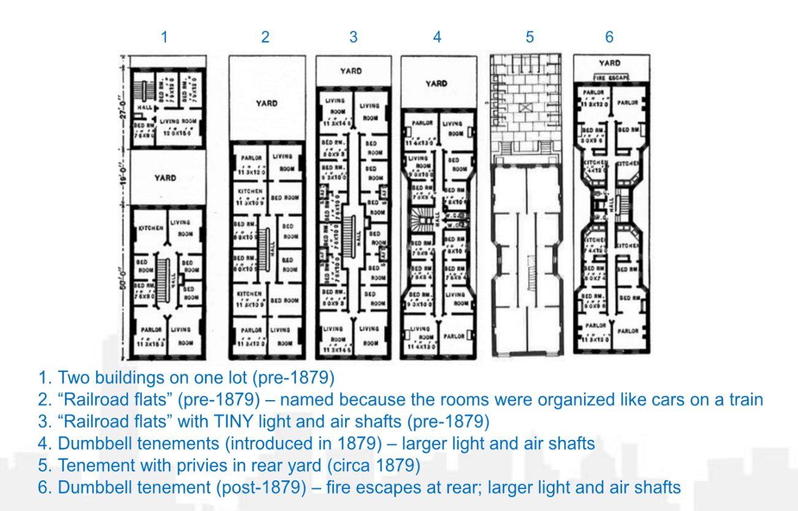

OLD LAW TENEMENTS AND ADJACENT CONSTRUCTION
A Narrative of the Risks
 On Thursday, July 16, 20201, a vacant building in Murray Hill collapsed. Bricks and debris
rained down on an empty lot-- no one was injured. The image of the collapse, shown to the right,
is only one of the many cases of the impact of construction activity adjacent2 to a 19th Century
building. Several other incidences involving these buildings have been recorded. However, the ones
that will be discussed are those related to structural stability issues and material failures.
The map below shows all incidences that took place in 19th Century buildings.
On Thursday, July 16, 20201, a vacant building in Murray Hill collapsed. Bricks and debris
rained down on an empty lot-- no one was injured. The image of the collapse, shown to the right,
is only one of the many cases of the impact of construction activity adjacent2 to a 19th Century
building. Several other incidences involving these buildings have been recorded. However, the ones
that will be discussed are those related to structural stability issues and material failures.
The map below shows all incidences that took place in 19th Century buildings.

These 19th Century Buildings also known as Old Law Tenements are buildings that were built between
1879 and 1901. Many of these buildings exist today in New York City’s 1.1 M building population,
which means that these buildings are approximately 142 years old. Built to last roughly 50 years
at most, these buildings show signs of structural issues and/or failures. Many
of these issues could ultimately turn into incidences when not caught in time or in proximity to major
construction. As shown in the map above, many of these Old Law Tenements show signs of wear-and-tear,
as they have exceeded their factor of safety. In so, to understand this specific building population3
a sample of this building population was taken.

As mentioned, Old Law Tenements exist today throughout all of New York City. A majority of the Old Law
Tenement population exists in both Manhattan and Brooklyn as these were the areas first settled. Due
to the establishment of fire codes and building codes4, the construction of these buildings was restricted. As
shown in the bar graph above, Brooklyn stands with the highest number of Old Law Tenements. There are about 15,667
registered Old Law Tenements under HPD jurisdiction. With the highest number of 19th Century buildings,
a sample was extracted from this borough. In order to build a case for the negative affects
of construction adjacent to these buildings, construction permits were extracted.
From the construction permit data, there seems to be an positive trend of construction activity spanning from 2010 to
2022. The graph above shows all permitted major construction: new building, demolition and alteration 1. These types
of permits are considered major construction due to the extent of the scope of work. New Building construction denotes
that there will be a new building being erected from the foundation up. A demolition job states that a building is
torn down, leaving an empty lot. Alteration 1 permit allows for the horizontal and vertical extension of an existing building.
These three types of permits are key to tracking major construction sites. With a high volume of permits being issues,
the location of these sites was important to determine their proximity to Old Law Tenements. From information gathered,
it was concluded that although these buildings pose a risk to the public due to its aging. Additionally, these sites pose a higher risk
when in proximity to construction. This is to say that when an Old Law Tenement was found to be adjacent to major construction,
the likelihood of showing signs of possible strutural issues or material failures was higher.Ultimately, all the data captured and used
was consolidated on one map, where the user is able to note whether a building is an Old Law Tenement, adjacent to construction,
had issued complaints and/or if the building location was a site with construction.
References